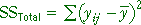
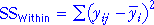
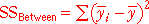
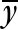
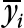
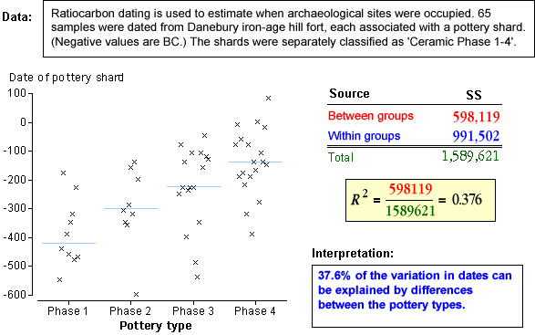

Sums of squares
The table below summarises the interpretation of the total, within-groups and between-groups sums of squares.
| Sum of squares | Interpretation |
|---|---|
|  | Overall variability of Y, taking no account of the groups. |
|  | Describes variability around the group means and is therefore variability that cannot be explained by the model. |
|  | Describes how far the group means are from the overall mean — i.e. the variability of the group means. It can also be interpreted as the sum of squares explained by the model. |
The best prediction for any observation in group i would be  if groups were not taken into account, whereas it would be  with our model.
The between-group sum of squares summarises how much predictions are improved by using the model.
Coefficient of determination
Since the between-group (explained) and within-group (residual) sums of squares add to the total sum of squares, a useful summary statistics is the proportion of the total sum of squares that is explained by the model. This proportion is called the coefficient of determination and is denoted by R2.
Note the following properties of R2.
0 ≤ R2 ≤ 1
Examples
The diagram below shows how R2 is calculated and interpreted for a few data sets.
